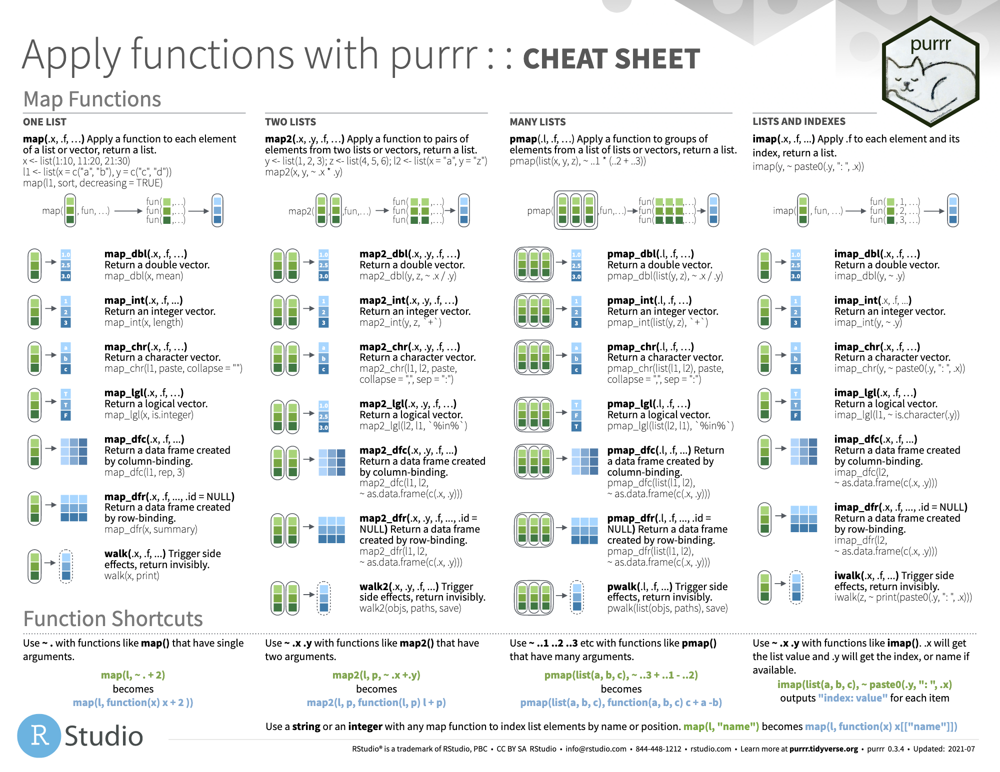

Chapter 10 Listas
Scripts usados:
Veamos un pequeño resumen de los datos que conocemos:
vectores: colección de elementos de igual tipo. Pueden ser números, caracteres o valores lógicos, entre otros.
matrices: colección BIDIMENSIONAL de elementos de igual tipo e igual longitud.
data.frame: colección BIDIMENSIONAL de elementos de igual longitud pero de cualquier tipo, lo más parecido a lo que conocemos como una tabla en Excel.
Con todos estos ingredientes estamos preparados/as para ver el que probablemente sea el tipo de dato más importante en R: las listas.
Las listas son colecciones de variables de diferente tipo (ya lo teníamos con data.frame) pero además también de diferente longitud, con estructuras totalmente heterógeneas, todo guardado en la misma variable (incluso una lista puede tener dentro a su vez otra lista).
Vamos a crear nuestra primera lista con tres elementos: el nombre de nuestros padres/madres, nuestro lugar de nacimiento y edades de nuestros hermanos.
variable_1 <- c("Paloma", "Gregorio")
variable_2 <- "Madrid"
variable_3 <- c(25, 30, 26)
lista <- list("progenitores" = variable_1,
"lugar_nacimiento" = variable_2,
"edades_hermanos" = variable_3)
lista$progenitores
[1] "Paloma" "Gregorio"
$lugar_nacimiento
[1] "Madrid"
$edades_hermanos
[1] 25 30 26[1] 3Si observas el objeto que hemos definido como lista, su longitud del es de 3 ya que tenemos guardados tres elementos
- un vector de caracteres (de longitud 2)
- un caracter (vector de longitud 1)
- un vector de números (de longitud 3)
Tenemos guardados elementos de distinto tipo (algo que ya podíamos con los data.frame pero, además, de longitudes dispares).
NULL[1] 3[1] "list"Si los juntásemos con un data.frame, al tener distinta longitud, obtendríamos un error: arguments imply differing number of rows.
data.frame("progenitores" = variable_1,
"lugar_nacimiento" = variable_2,
"edades_hermanos" = variable_3)Error in data.frame(progenitores = variable_1, lugar_nacimiento = variable_2, : arguments imply differing number of rows: 2, 1, 3Para acceder a un elemento de la lista tenemos dos opciones:
Acceder por índice: con el operador
[[i]]accedemos al elemento i-ésimo de la lista.Acceder por nombre: con el operador
$nombre_elementoaccedemos al elemento por su nombre
[1] "Paloma" "Gregorio"[1] "Paloma" "Gregorio"Dada su heterogeneidad y flexibilidad, para acceder a un elemento particular, las listas tienen una forma peculiar de acceder (con el corchete doble, en contraposición con el corchete simple que nos permite acceder a varios elementos a la vez)
$progenitores
[1] "Paloma" "Gregorio"
$lugar_nacimiento
[1] "Madrid"Las listas nos dan tanta flexibilidad que es el formato de dato natural para guardar datos que no están estructurados, como pueden ser los datos almacenados en el registro de una persona.
Vamos a definir, por ejemplo, los datos que tendría un instituto de un alumno.
nacimiento: una fecha.notas_insti: undata.frame.teléfonos: vector de números.nombre_padres: vector de texto.
# Fecha de nacimiento
fecha_nacimiento <- as_date("1989-09-10")
# Notas de asignaturas en primer y segundo parcial
notas <- data.frame("biología" = c(5, 7), "física" = c(4, 5),
"matemáticas" = c(8, 9.5))
row.names(notas) <- # Nombre a las filas
c("primer_parcial", "segundo_parcial")
# Números de teléfono
tlf <- c("914719567", "617920765", "716505013")
# Nombres
padres <- c("Juan", "Julia")
# Guardamos TODO en una lista (con nombres de cada elemento)
datos <- list("nacimiento" = fecha_nacimiento,
"notas_insti" = notas, "teléfonos" = tlf,
"nombre_padres" = padres)
datos$nacimiento
[1] "1989-09-10"
$notas_insti
biología física matemáticas
primer_parcial 5 4 8.0
segundo_parcial 7 5 9.5
$teléfonos
[1] "914719567" "617920765" "716505013"
$nombre_padres
[1] "Juan" "Julia"Hemos creado una lista algo más compleja de 4 elementos, a los cuales podemos acceder por índice o por nombre.
[1] "1989-09-10"[1] "1989-09-10" biología física matemáticas
primer_parcial 5 4 8.0
segundo_parcial 7 5 9.5 biología física matemáticas
primer_parcial 5 4 8.0
segundo_parcial 7 5 9.5Como hemos comentado, también podemos hacer listas con otras listas dentro, de forma que para acceder a cada nivel deberemos usar el operador [[]].
lista_de_listas <- list("lista_1" = datos[3:4], "lista_2" = datos[1:2])
names(lista_de_listas) # Nombres de los elementos del primer nivel[1] "lista_1" "lista_2"names(lista_de_listas[[1]]) # Nombres de los elementos guardados en el primer elemento, que es a su vez una lista[1] "teléfonos" "nombre_padres"[1] "914719567" "617920765" "716505013"¡Nos permiten guardar «datos n-dimensionales»!.
Es un formato muy habitual para devolver argumentos en funciones. Imagina que la función igualdad_nombres que hemos definido en el Ejercicio 4
WARNING: operaciones aritméticas con listas
Una lista no se puede vectorizar de forma inmediata, por lo cualquier operación aritmética aplicada a una lista dará error (para ello está disponible la función lapply(), o con las funciones del paquete {purrr}, cuyo uso avanzado corresponderá a otro manual pero que veremos a continuación una pequeña introducción).
Error in datos/2: argumento no-numérico para operador binario$a
[1] 0.5 1.0 1.5 2.0 2.5
$b
[1] 5.0 5.5 6.0 6.5 7.0 7.5 8.0 8.5 9.0 9.5 10.0
10.1 Introducción a purrr
Dada su heterogeneidad, una lista no se puede vectorizar de forma inmediata, por lo cualquier operación aritmética aplicada a una lista dará error, como vemos a continuación con un ejemplo sencillo.
Error in datos/2: argumento no-numérico para operador binarioPara operar con listas, una de las opciones más habituales es hacer uso de la familia lapply(), con un funcionamiento similar a la familia apply() que ya hemos visto con matrices. Dicha función lapply() necesita como primer argumento la lista a la que aplicar la operación, y como segundo argumento FUN = ... la función que querramos aplicar a cada elemento de la lista.
$a
[1] 0.5 1.0 1.5 2.0 2.5
$b
[1] 5.0 5.5 6.0 6.5 7.0 7.5 8.0 8.5 9.0 9.5 10.0Fíjate que la salida de lapply(), por defecto, siempre será otra lista de igual longitud (cada elemento será la función aplicada a cada elemento original de la lista).
Una opción más flexible y versatil de aparición «reciente» es hacer uso del paquete {purrr} del entorno {tidyverse}.
Dicho paquete contiene diversa funciones que pretenden imitar la programación funcional de otros lenguajes como Scala o la estrategia map-reduce de Hadoop (de Google).

La función más simple del paquete {purrr} es la función map(), que nos aplica una función vectorizada a cada uno de los elementos de una lista.
library(microbenchmark)
x <- 1:1000
y <- sqrt(x) # vectorizado
# bucle
for (i in 1:1000) { y[i] <- sqrt(x[i]) }
microbenchmark(sqrt(x), for (i in 1:1000) { y[i] <- sqrt(x[i]) }, times = 1e3)Unit: microseconds
expr min lq mean median uq max neval
sqrt(x) 4.1 4.60 5.8087 5.20 5.60 130.1 1000
for (i in 1:1000) { y[i] <- sqrt(x[i]) } 1869.7 2011.25 2846.6620 2092.75 2239.75 509356.3 1000En vectores disponemos de una vectorización por defecto porque R realiza operaciones elemento a elemento. Con map() podemos «mapear» cada lista y aplicar la función elemento a elemento (si fuese el caso).
[[1]]
[1] 1 2
[[2]]
[1] 1 2
[[3]]
[1] 1 2[[1]]
[1] 1.000000 1.414214
[[2]]
[1] 1.000000 1.414214
[[3]]
[1] 1.000000 1.414214# otro ejemplo
x <- list(rnorm(n = 1e3, mean = 0, sd = 1),
rnorm(n = 1e3, mean = 2, sd = 1))
map(x, mean)[[1]]
[1] -0.007770925
[[2]]
[1] 1.995241x <- rep(list(rnorm(n = 1e3, mean = 0, sd = 1)), 1000)
# Medimos tiempos entre map y lapply
microbenchmark(map(x, .f = function(x) { mean(x^2) }),
lapply(x, FUN = function(x) { mean(x^2) }),
times = 1e3)Unit: milliseconds
expr min lq mean median uq max neval
map(x, .f = function(x) { mean(x^2) }) 6.8513 7.77875 9.532887 8.85855 9.69095 66.3664 1000
lapply(x, FUN = function(x) { mean(x^2) }) 6.6999 7.67670 9.568770 8.65995 9.74995 166.6341 1000
Además de ser más legible y eficiente, el la vectorización de las listas con el paquete {purrr} nos permitirá decidir el formato de salida tras la operación (por ejemplo, en formato de vector con map_dbl() para números - en general - y map_int() para enteros), sin necesidad de hacer uso de unlist() (deshace el formato de lista original).
# lista de 1000 valores de dos normales
x <- list(rnorm(n = 1e3, mean = 0, sd = 1),
rnorm(n = 1e3, mean = 2, sd = 1))
# media de cada una, devuelto en formato vector
map_dbl(x, mean)[1] 0.030613 1.970675Una de las opciones más habituales, y una de las principales ventajas, es pasar como argumento un número en lugar de una función, lo cual nos devolverá el elemento i-ésimo de cada lista de forma inmediata.
[1] -0.9206154 2.6781562[1] -0.9206154 2.6781562
Aunque no es el objetivo de este manual introductorio profundizar en dicho paquete (te lo recomiendo), mencionar que además nos permite la opción de pasar más de un argumento, realizando operaciones binarias, con la función map2()
x <- list("a" = 1:3, "b" = 4:7)
y <- list("c" = c(-1, 4, 0), "b" = c(5, -4, -1, 2))
# dos listas como argumentos
map2(x, y, .f = function(x, y) { x^2 + y^2})$a
[1] 2 20 9
$b
[1] 41 41 37 5310.2 📝 Ejercicios
Ejercicio 1: define una lista de 4 elementos de tipos distintos y accede al segundo de ellos (yo incluiré uno que sea un data.frame para que veas que en una lista cabe de todo).
- Solución:
# Ejemplo: lista con texto, numérico, lógico y un data.frame
lista_ejemplo <- list("nombre" = "Cristian", "cp" = 28019,
"soltero" = TRUE,
"notas" = data.frame("mates" = c(7.5, 8, 9),
"lengua" = c(10, 5, 6)))
lista_ejemplo$nombre
[1] "Cristian"
$cp
[1] 28019
$soltero
[1] TRUE
$notas
mates lengua
1 7.5 10
2 8.0 5
3 9.0 6[1] 4[1] 28019
Ejercicio 2: accede a los elementos que ocupan los lugares 1 y 4 de la lista definida anteriormente.
- Solución:
$nombre
[1] "Cristian"
$notas
mates lengua
1 7.5 10
2 8.0 5
3 9.0 6Otra opción es acceder con los nombres
[1] "Cristian" mates lengua
1 7.5 10
2 8.0 5
3 9.0 6$nombre
[1] "Cristian"
$notas
mates lengua
1 7.5 10
2 8.0 5
3 9.0 6
Ejercicio 3: define una lista de 4 elementos que contenga, en una sola variable, tu nombre, apellido, edad y si estás soltero/a.
- Solución:
# Creamos lista: con lubridate calculamos la diferencia de años desde la fecha de nuestro nacimiento hasta hoy (sea cuando sea hoy)
lista_personal <- list("nombre" = "Cristian",
"apellidos" = "Crisben",
"edad" = 30,
"soltero" = TRUE)
lista_personal$nombre
[1] "Cristian"
$apellidos
[1] "Crisben"
$edad
[1] 30
$soltero
[1] TRUE